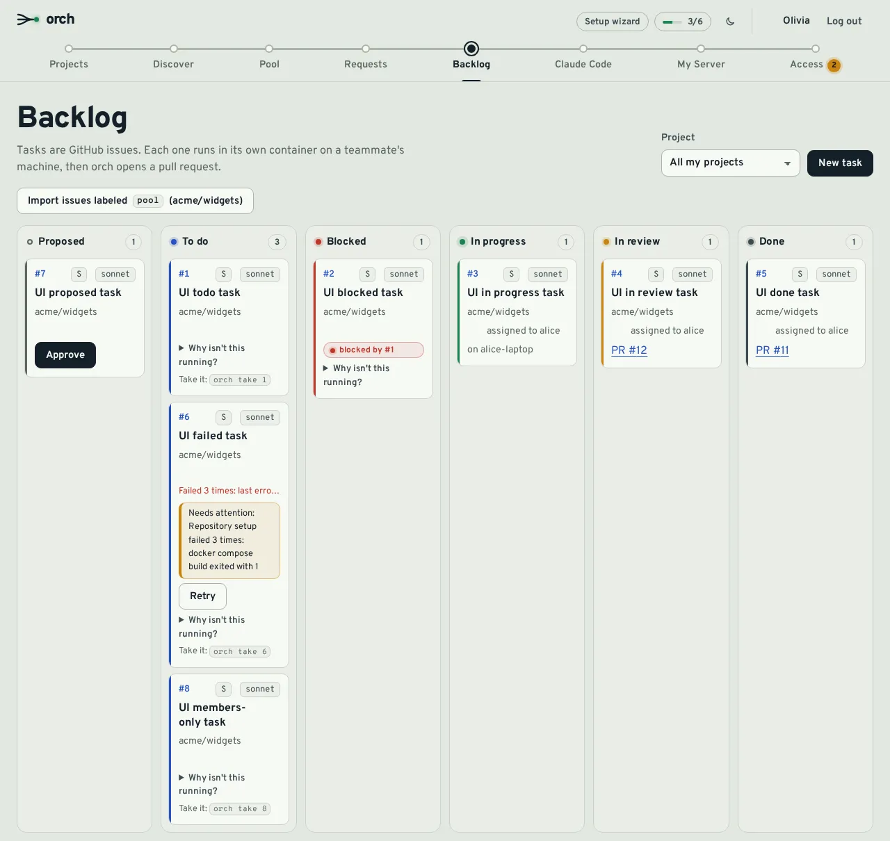
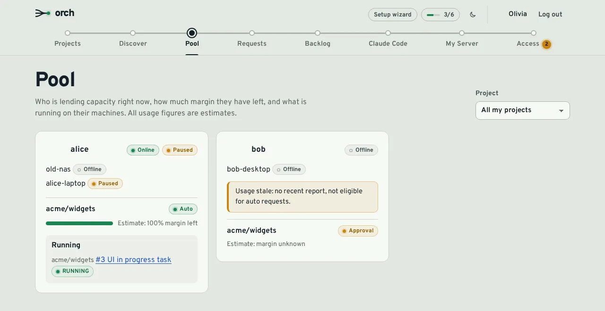

Hand your teammates' idle Claude capacity a to-do list.
orch is a shared to-do list for small, trusted teams. Tasks are GitHub issues. Each one runs on a teammate's own machine, with their own Claude subscription, in a throwaway container, and comes back as a pull request. Nobody shares an account.
How a task gets done
-
Label an issue
Any issue carrying the project's pool label becomes a task. You can also create one on the Backlog page, or let Claude Code split a feature into tasks through MCP.
-
orch offers it to a teammate
In auto mode it goes to the member with the most budget left. In approval mode nothing starts until they accept.
orch pausealways wins. -
It runs on their machine
Claude Code works in a non-root container that only sees a fresh clone, with that member's own subscription. You follow the run in live logs.
-
A pull request comes back
orch pushes an
orch/issue-<n>-*branch and opens a draft PR. The project owner reviews and merges; dependent tasks start after.

What you get
Everything a small team needs to share the work, and to see what their Claude capacity is doing.
While a task runs
- Live logs
-
A Logs panel on each task card follows Claude Code as it works: messages, tool
calls such as
Bash pnpm test, the start of each result. Secrets are masked on the machine before a line leaves it. - Budgets and the pool
- Each member gives a project a share of their Claude capacity. orch estimates the 5-hour window from local usage, holds back a safety margin and only offers work that fits.
- Auto or approval, per project
- Choose which models you allow and whether tasks start on their own or wait for you. Nobody, not even an admin, can change that for you.

Keeping everyone in the loop
- Notifications
- Task done, task failed, PR ready for review, a task offered to you, access requests. In the app, and per event in Slack, Discord, any JSON webhook, e-mail or browser push.
- Usage dashboard
- Tokens per day, task runs, success rate, and what each project has used of its share in the current window, over 7, 30 or 90 days.
- History and templates
-
Search every task that has run, with its PR, runs and failure class. Start new
tasks from built-in, personal or shared templates with
{{placeholders}}. - Claude Code over MCP
- Claude Code can view the pool, split work into tasks with dependencies, dry-run and submit them. No extra LLM key: your own Claude does the planning. OAuth 2.1 sign-in.

Built for teams who trust each other
orch is a shared to-do list with automation, not a multi-tenant platform. Here is exactly what it protects, and what it does not.
What orch does
- Credentials stay local. The Claude token lives on the member's machine. The server only sees task statuses and usage estimates.
- Outbound only. Agents connect to the server over a WebSocket. Member machines open no inbound port.
- A sandbox per task. Non-root container, only its own clone mounted, no Docker socket, no host home. Git metadata stays outside.
-
Compose guard. A repository's own compose file is checked for
privileged, host mounts, the Docker socket, host networking andcap_add. - Secret redaction. Live logs mask the member's Claude token, the run's GitHub tokens and known token patterns, on the machine and again on the server.
-
Draft PRs. Auto-mode PRs open as drafts. orch only pushes
orch/issue-<n>-*branches.
What it does not do
- No egress filtering. In auto mode the task container has network access and the member's token. A malicious issue could exfiltrate it.
- Not for strangers. Anyone who can label an issue for the pool is, in effect, writing a prompt that runs on a teammate's machine.
- The agent is root-equivalent on the member's host: it drives Docker to start task containers. Rootless Docker reduces this.
- Budgets are estimates. Anthropic does not publish exact subscription limits. Treat them as hints.
The compose guard is still being completed on the agent side; until then, treat a repository's compose file as trusted code. Read the security model
Yours to run
- One Docker Compose stack: Caddy with automatic HTTPS, the server, Postgres. Cloudflare Tunnel works too.
-
Backups built in: scheduled
pg_dumpwith rotation, optional age encryption and S3 upload, and a restore script. - Observability when you want it: Prometheus metrics, OpenTelemetry traces and a ready-made Grafana dashboard, all off by default.
- Sign-in you control: GitHub sign-in limited to admins, an allowlist of logins or organizations, invite links and an audited Access page.
Install
You need a Linux host with Docker 26+ and Compose, ports 80 and 443, and a DNS name. Then create the GitHub App described in the docs.
On the server, once
git clone https://github.com/Theroxat/claude_orch.git && cd claude_orch/deploy/server
cp .env.example .env # fill it in, then create the GitHub App
docker compose up -dOn each member's machine
curl -fsSL https://<domain>/install.sh | ORCH_TOKEN=<one-time-token> sh
orch loginThe My Server page gives each member this command with a one-time token, valid 15 minutes.
In Claude Code, optional
claude mcp add --transport http --scope user orch https://<domain>/mcp
Then run /mcp, pick orch and choose Authenticate.
Questions
Is it safe to use with strangers?
No. Anyone who can get an issue labeled for the pool can make Claude run on a teammate's machine, with network access and their token. Use orch with people you trust, on repositories where outsiders cannot file labeled issues.
Why are no tasks offered to me?
Offers need an active auto participation, an online and unpaused agent, a fresh
usage report, enough estimated budget and an allowed model.
orch list shows what you can take now, orch status shows
the pause state and orch doctor checks the Claude binary and token.
The agent says "Claude login expired". What now?
Run orch login. The running agent picks up the new token without a
restart.
Caddy cannot get a certificate. Why?
DNS must resolve to the host and ports 80 and 443 must be reachable. Custom HTTP or HTTPS ports break the Let's Encrypt challenge; use another proxy or the Cloudflare Tunnel mode.
An upgrade broke something. How do I roll back?
Pin ORCH_VERSION on the server or ORCH_AGENT_TAG on the
agent to the previous release and run docker compose up -d. Restore
from a backup if needed.